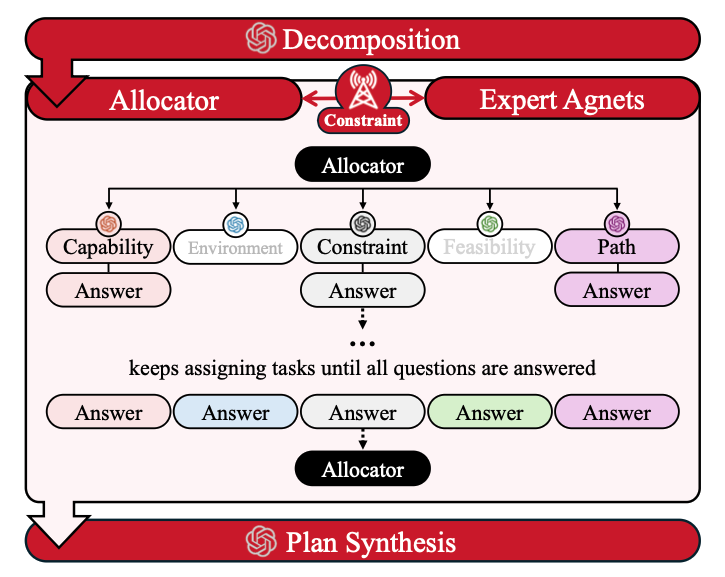

Large Language Models (LLMs) can reason over complex instructions but often fail to satisfy the physical and spatial constraints required for robotic task planning. Recent LLM-based planners directly translate text into action sequences, yet they lack structured reasoning about feasibility, reachability, and logical order, resulting in invalid or incomplete plans.
We present a heterogeneous multi-LLM framework that decomposes instructions into atomic reasoning tasks and allocates them to role-specialized expert agents under a token budget for real-world communication and computation constraints. By combining role-oriented reasoning from heterogeneous agents followed by constraint-driven plan synthesis, HEART validates capability, reachability, and constraint conditions before planning and produces physically executable plans while maintaining efficiency.
Experiments across three benchmarks show that HEART consistently improves plan success and token efficiency compared to single-LLM and rule-based planners, demonstrating that heterogeneous LLM collaboration enables robust and scalable robotic task planning under resource constraints.
